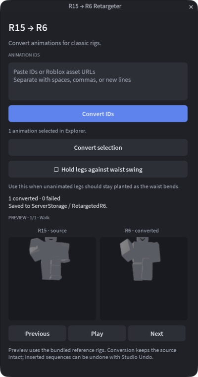
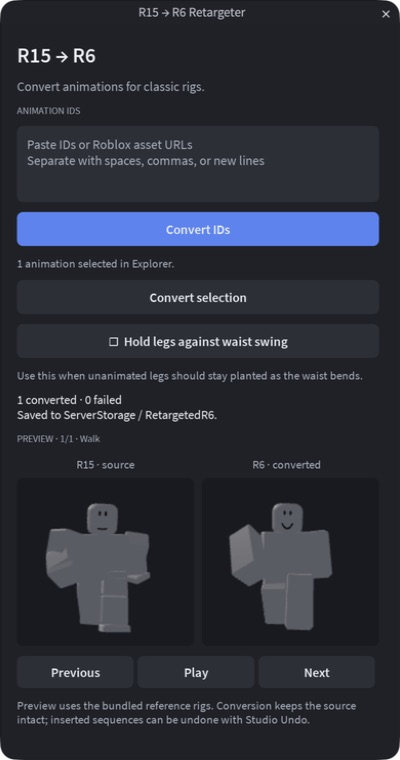
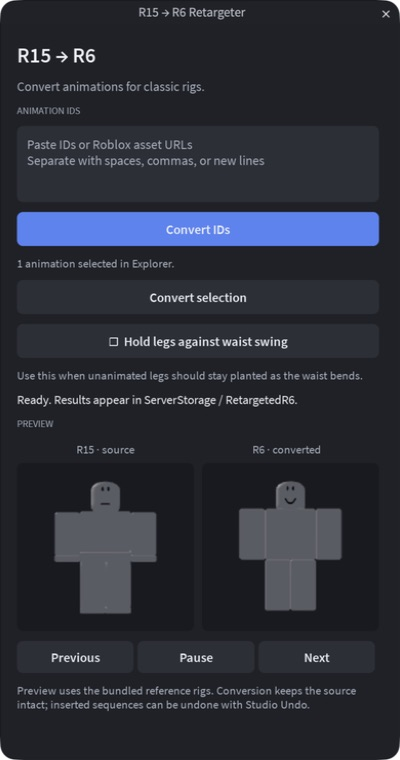
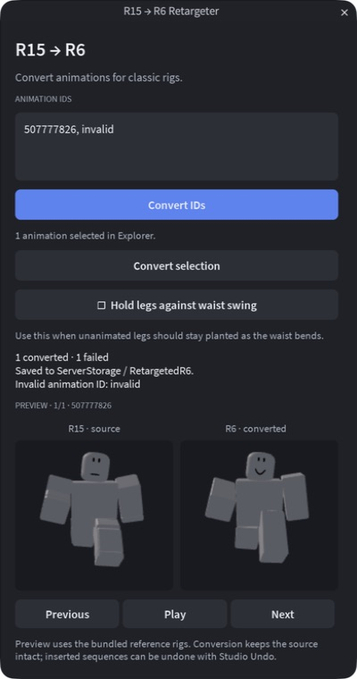

Animation tools · 20 September 2026R15 → R6 Studio plugin
One converter shared by a private pesde package and a standalone Studio plugin. IDs, selected Animations, and selected KeyframeSequences feed an undoable batch conversion with a synchronized R15/R6 comparison.
Validated in Studio: 157 assertions; exact parity on 159 game sequences with both options (290 converted results); online loading and repeat loading; mixed failures; undo/redo; preview startup and centering.
Walk preview — centered framing
The original camera aimed at the rigs’ floor-level pivots. The current camera targets each rig’s body bounds, uses a common viewing scale, and refits for the panels’ aspect ratio. The rest frame stays stable during playback.
Baseline · original camera
Reproduced with the original camera transform on the same paused pose.
Current · fitted body bounds
Walk fixture · 0.30 seconds · 400 × 760 plugin window.
Both captures use the same source, reference rigs, lighting, panel dimensions, and playback time. Click any preview for its full-resolution source.
Additional states
First captures establish the baseline for these new views; no earlier comparison is implied.
Ready · first-capture baseline
Selected local sequence; both reference rigs at rest.
Mixed batch · first-capture baseline
One valid online ID and one invalid input; successful output remains available.
Iteration notes and validation
- Conversion logic extracted unchanged from anim-utils; no retargeting math changed.
- Fetched animation clips are cloned before conversion so plugin cleanup cannot invalidate the provider cache.
- Converted output is inserted in one undo recording; source sequences stay intact.
- The first dock layout was cramped. The plugin now opens as a resizable floating window and can be docked by the user.
- Visual inspection caught the floor-pivot framing error. The corrected preview is covered by centering and full-bounds containment checks at normal and narrow panel sizes.
- Native Studio plugin captures were inspected directly. The review harness can pause at each stage for repeat captures.
- Current limits: reference-rig proportions and body-pose KeyframeSequences; CurveAnimation is reported as unsupported.